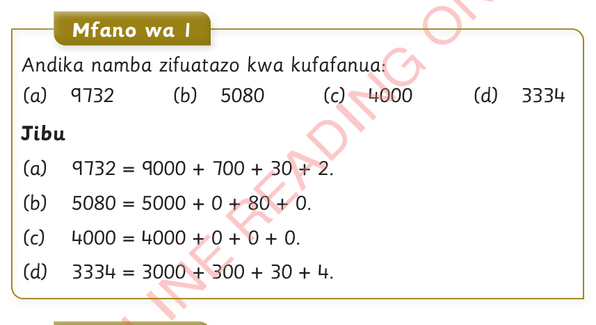
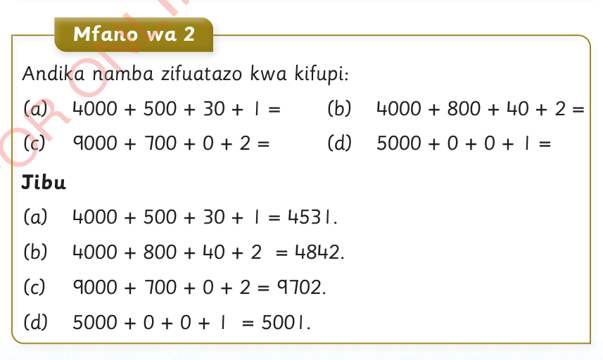

Kufafanua namba nzima
Kufafanua namba nzima ni kuandika namba nzima katika thamani za tarakimu na kuzijumlisha. Utaratibu huu huonesha thamani ya kila tarakimu katika namba nzima. Namba nzima inapoandikwa kwa kifupi, thamani ya kila tarakimu katika namba hiyo inaweza kuandikwa kwa kufafanua namba hiyo.

